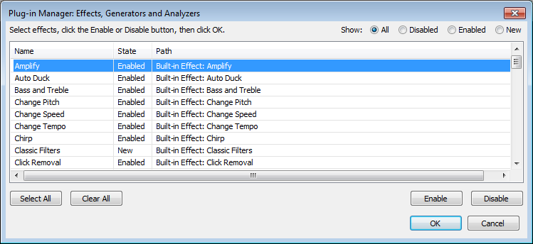

Add / Remove Effects, Generators and Analyzers
- Accessed by: , or
- 
Radio buttons
Every time you open the dialog, Audacity scans for all detected plug-ins and lists these together with the built-in effects it ships with.
Select the All button to see all those built-in effects and plug-ins and their current disabled, enabled or "new" state (see below).
The buttons Disabled, Enabled and New enable you to list only those effects, generators and analyzers in that respective state.
Enabling and disabling
All effects shown in the dialog as Enabled will be visible in the appropriate menu: Effect, Generate or Analyze.
New relates to those effects that have never been registered as Enabled in your installation of Audacity. Use this New view to quickly locate an effect that you have just added to your system and wish to enable.
To change the state of any effect, generator or analyzer select it by clicking on it in the list in the dialog, then use either the or button and click the button. Note that escaping, clicking Cancel or the window close button will discard your changes. Alternatively you can use Space to toggle the state of the effect from New to Enabled and thence between Enabled and Disabled.
- Press to select all items in the view you are in. The items will now appear with light gray background. The button deselects all items and can be used to change your mind and quickly enable only one or two individual effects.
- Multiple individual items from the list can be selected using Ctrl + Click to select each additional item or Shift + Click to select a range of items.
Once enabled, an effect can only be disabled (which removes it from the menu) or re-enabled. Unless you are in the "All" view, changing the state of an effect always removes it from the view you are in. The effect can then be seen in the appropriate view for its current state.
Disabling an effect only disables it in Audacity, and does not uninstall it from your system.
Resetting effects
Resetting your Audacity settings (for example, by reinstalling Audacity using the Windows installer with "Reset Preferences" enabled) does not change the enabled or disabled state of your effects.
If you want to go back to the enabled effects, generators and analyzers that Audacity was installed with (Classic Filters and all shipped or third-party plug-ins are "New" and not in the menus), exit Audacity, open Audacity's folder for application data and delete the file "pluginregistry.cfg".